Les blockhaus allemands de la grande guerre réutilisés par la BEF
Durant la Grande Guerre, les Allemands construisent les premiers abris bétonnés que l’on connaît aujourd’hui. Ces bunkers et blockhaus font partie de la ligne Hindenburg et ont été construits entre 1915 et 1917 par des pionniers allemands, des civils réquisitionnés et des prisonniers. Les blockhaus tiraient le plus souvent vers l’Ouest, ce qui ne facilite pas leur réutilisation défensive dans le cadre de la ligne Maginot. Les Britanniques inspectent les blockhaus avec un créneau orienté vers le Nord et les abris afin d’y loger les soldats. Un nombre inconnu de blockhaus de la ligne Hindenburg ont été réutilisés par la BEF. Parfois, il fallait réaliser directement des créneaux afin d’utiliser les armes britanniques ou de tirer dans une autre direction. Une dizaine de blockhaus, dont nous sommes certains qu’ils ont été réutilisés, sont répertoriés sous les noms suivants : BEF 7, 8,10, 10bis, 12, 13, 14, 15, 16, 17, 18, 768 et 769.
BEF 7,8,9,10,11,12 et 13
Ces blockhaus ont étaient utilisés pour loger des hommes du York and Lancaster Regiment. Plusieurs travaux ont eu lieu pour les moderniser.
plan type des blockhaus (il peut différer en fonction du blockhaus)
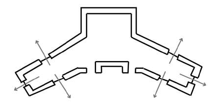
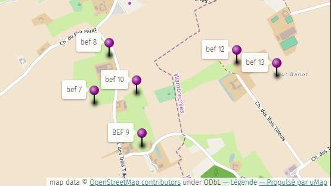
BEF 7,9,10
Pas de travaux à effectuer
BEF 8
Créer un créneau tirant vers le Nord
Blockhaus utilisés par les Yorks and Lancasters
BEF 13
Reconnaître la possibilité de niveler le plafond intérieur et le terrain extérieur afin d’obtenir une meurtrière tirant vers le nord-est.
Le rapport de reconnaissance doit être transmis au commandant de brigade, qui décidera de l’exécution des travaux.
Évaser le bord de la meurtrière existante. Étudier la possibilité d’agrandir l’ouverture du volet d’observation en acier pour permettre l’utilisation d’un fusil-mitrailleur Bren.
L’évasement doit être réalisé immédiatement. L’agrandissement doit être effectué si possible.
BEF 12
BEF 8
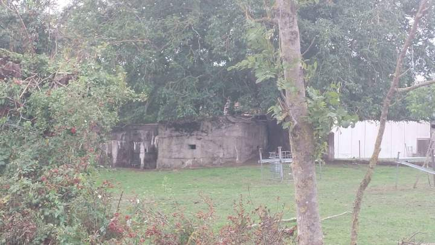
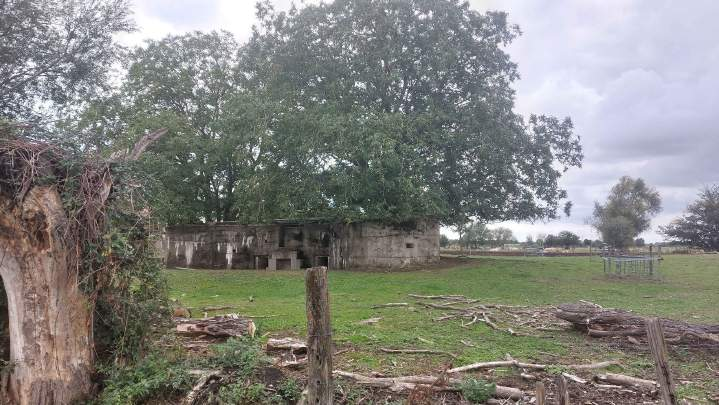
BEF 7
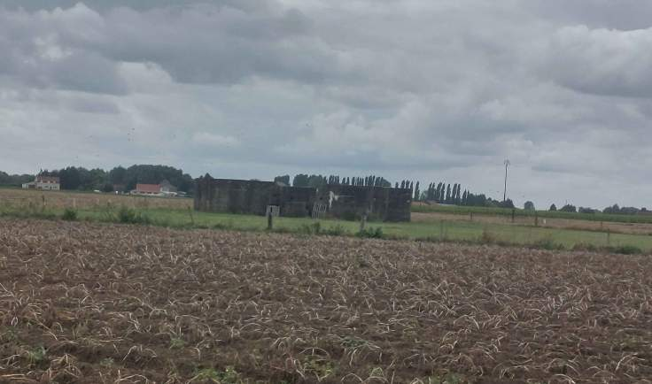
BEF 10
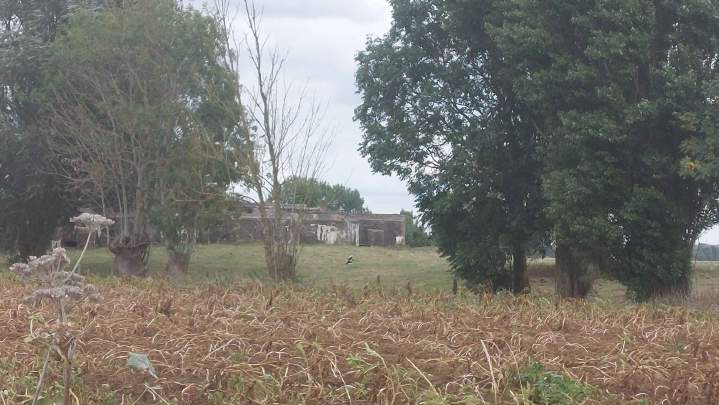
BEF 9
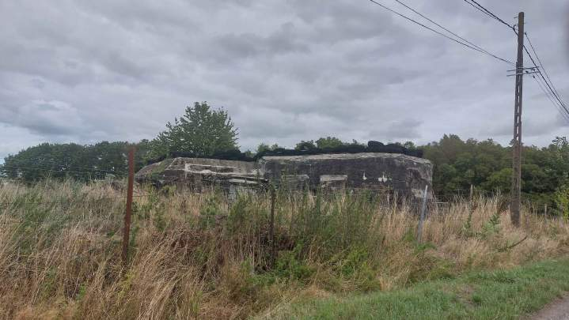
BEF 10bis
Le blockhaus tirait en direction Nord et Ouest, Parfait pour être réutiliser par la BEF
Il a aujourd’hui disparu
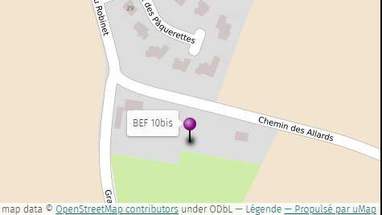
BEF 16
Bunker pour loger des hommes du King's Own Yorkshire Light Infantry
Aucun travail n’a était requis
plan type
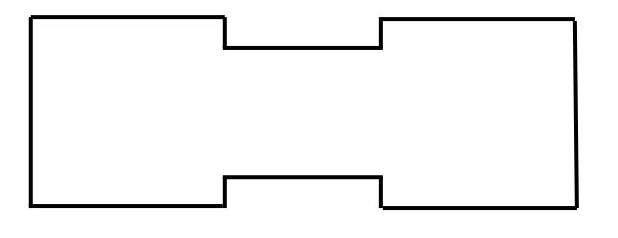
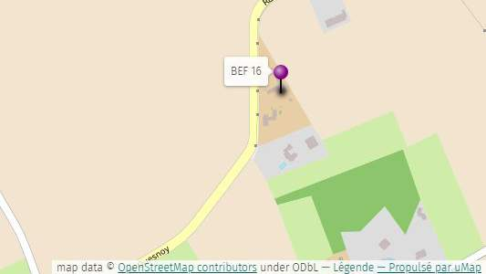
BEF 17
Le bunker a servi pour les hommes du King's Own Yorkshire Light Infantry.
Afin de rendre le bunker utilisable, il a été nécessaire de détourner le drain de champ ou la source existante qui provoquait son inondation. Dans l’attente de l’achèvement de ces travaux, une pompe de refoulement a été installée et maintenue en service. Par ailleurs, la transformation du conduit d’aération en créneau de tir a été étudiée. Il était prévu, si les conditions techniques le permettaient, de réduire et découper l’ouverture de ce conduit aux dimensions d’un créneau adapté à l’observation et au tir.
BEF 18
Le blockhaus a été utilisée comme position de repli pour un canon de 2pdr.
Les travaux ont été de réparer la pompe d’origine.
Les 2 blockhaus ont disparu
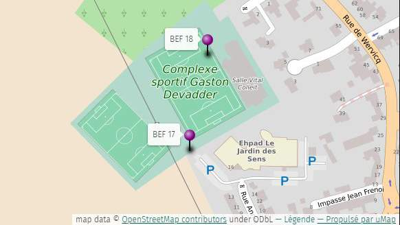
BEF 768
Le bunker a été utilisée comme cantonnement pour des soldats des Royal Scots Fusiliers. Il disposait de deux entrées qui menait au bunker. Il pouvait accueillir environ 50 à 60 soldats. Il est maintenant semi-enterré dans un parc publique.
plan type
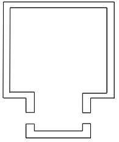
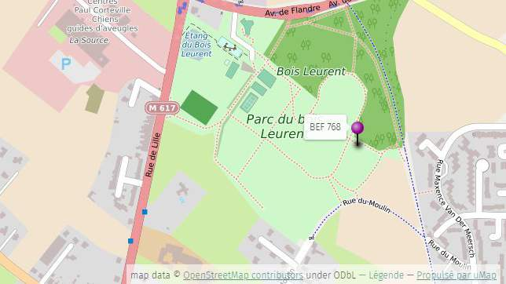
BEF 769
Le bunker a probablement été réutiliser comme son voisin BEF 769. Il dispose de 3 pièces. Il est maintenant partiellement remblayé dans un chantier (2026).
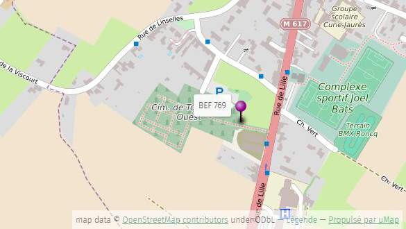
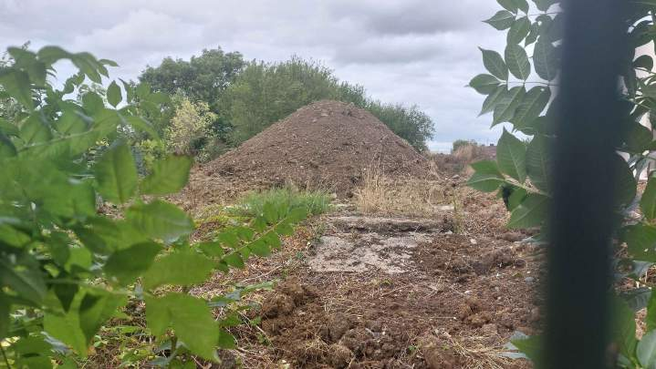
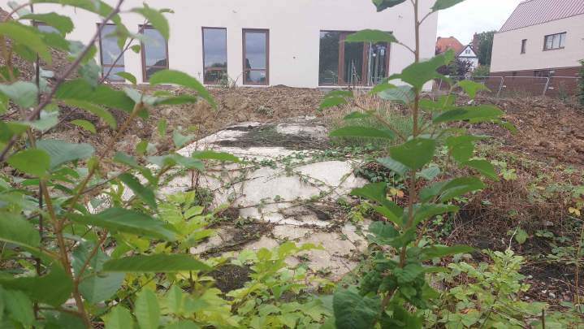
Sources :
Wikimaginot
Livre “building the Gort line”
carte openstreetmap
Site web Hindenburg Map : https://hindenburgmap.github.io/official/
Roncq en 1940 : https://www.roncq.fr/actualite/actualites?view=article&id=13337&catid=52
.png)